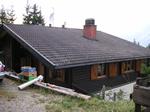

|  |
Anfahrtsplan:
Autofahrer:
- Aus Salzburg, Tauernautobahn A10, Exit 63, Bundesstraße (38 km)
- Aus Richtung Graz - Ausfahrt bei Schladming - links
- Von Villach-Tauernautobahn A10, Exit 104, Bundesstraße wie oben (38 km)
Über die Planaistrasse bis zur Mittelstation.
Anreise per Bahn:
- Bahnhof Schladming
- Mit der Gondel zur Mittelstation
- 5 Gehminuten zur Hütte
Anreise mit Flugzeug:
- Flughafen Salzburg: 1 Stunde Flughafen München: 2,5 Stunden
- Mit der Gondel zur Mittelstation
- 5 Gehminuten zur Hütte
online Routenplaner
|
|